地政学
オースティンはテキサス州政府と大学研究が近接する内陸首都です。I-35回廊、空港、コロラド川沿いの湖が、ダラス、サンアントニオ、ヒューストン方面との人と資本を結び、州内政治と成長産業を同じ都市で動かしています。

🇺🇸 アメリカ合衆国 / 北米 / World City Atlas
州都、大学都市、ライブ音楽の街、半導体とソフトウェアの成長拠点が重なるテキサス中央部の都市。川と丘陵、政治対立、住宅急騰、暑さと水の制約が同じ都市圏を形作ります。
都市の骨格
オースティンは「変わったテキサス」の合言葉だけでは読めません。州議会、巨大大学、半導体工場、湖と湧水、ライブ会場、郊外住宅が近接し、成長の明るさと生活費の圧力が同時に見えます。
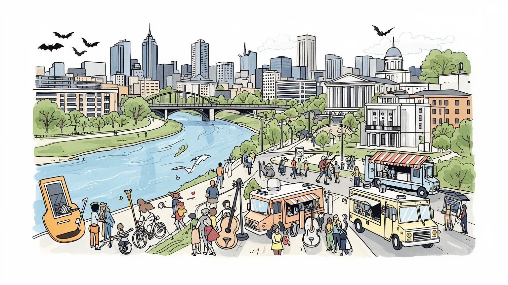
オースティンはテキサス州政府と大学研究が近接する内陸首都です。I-35回廊、空港、コロラド川沿いの湖が、ダラス、サンアントニオ、ヒューストン方面との人と資本を結び、州内政治と成長産業を同じ都市で動かしています。
半導体、ソフトウェア、大学、州政府、医療、観光、建設が雇用の柱です。高賃金の技術職が目立つ一方、飲食、清掃、配達、介護、警備、工場、ホテルの仕事が日々都市の速度を支え、住宅費の上昇と強く結びます。
ライブ音楽、映画祭、大学文化、メキシコ系の食と祝祭、教会、移住者の礼拝空間が混ざります。自由で創造的な都市像は強い一方、急成長が古い会場や近隣の記憶を押し出す緊張も日常の文化に今も影を落とします。
川辺、州会議事堂、大学、音楽街、フードトラックは訪問者に開かれていますが、住民には家賃、暑さ、水、交通、学校、郊外通勤が重い課題です。観光と移住人気が増えるほど、暮らしの手頃さを守る力が問われます。
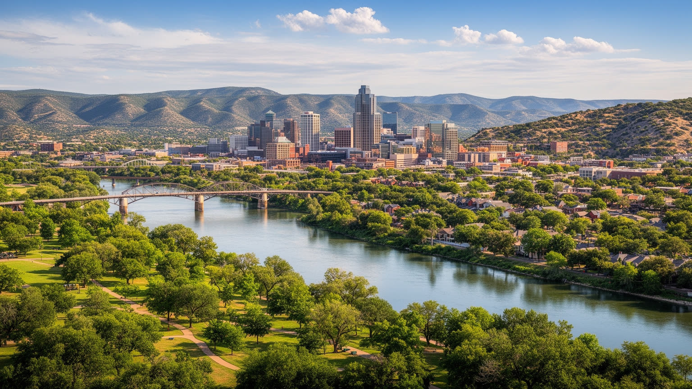
オースティンの地図は、テキサス中央部を東西に分ける地形の境目から読むと立体的になります。西側には石灰岩の丘陵、入り江、湖、樹木の多い住宅地が広がり、東側には比較的平坦な土地、古い労働者地区、産業用地、拡張する郊外が続きます。コロラド川は市内でレディバード湖やオースティン湖として見え、ボート、遊歩道、橋、野外イベント、都心景観を支える公共空間になっています。一方で、この水辺は単なる余暇の場所ではありません。洪水の記憶、ダム管理、飲み水、暑さの緩和、地価上昇、東西格差が川沿いに重なります。丘陵の眺望と水辺の近さは住宅価格を押し上げ、低地や幹線道路沿いには賃貸住宅、物流、サービス労働の生活圏が広がります。川を横切る橋は通勤路であり、祭りの日の歩行者動線でもあります。さらに湧水や小川は、泳ぐ場所であるだけでなく、環境保護と開発規制をめぐる争点にもなります。西側の緑地を守る議論、東側の排水改善、湖畔の再開発、道路拡張は別々の政策に見えて、同じ流域の判断としてつながっています。観光客が歩く水辺と、日々の通勤で渡る橋、雨の日に冠水する低地は同じ都市の表情です。水辺の人気は公共性を高める一方、誰が近くに住めるかも変えます。地形を見れば、オースティンが美しい水辺都市であると同時に、水と土地をめぐる不平等を抱える都市だと分かります。
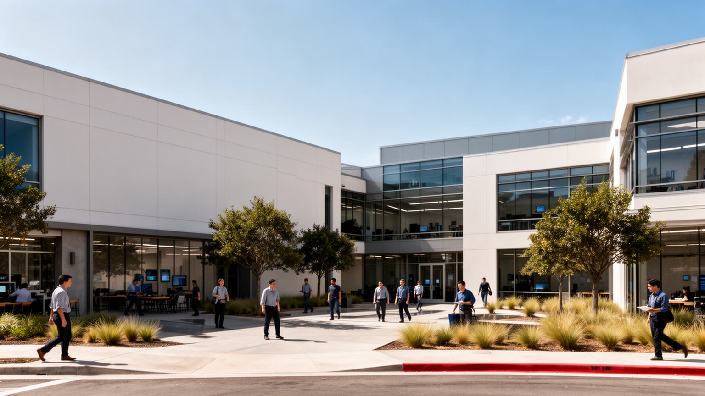
オースティンの経済は、州都や大学だけでなく、半導体、ソフトウェア、クラウド、ゲーム、電気自動車、データセンター、スタートアップの集積によって急速に変わりました。郊外には大規模な工場、研究開発拠点、物流施設が広がり、都心や北西部には技術企業のオフィス、共同作業空間、ベンチャー資本、専門職向け住宅が集まります。高い給与を得るエンジニアや管理職は都市の消費を押し上げますが、その便利さは清掃、警備、建設、配達、飲食、保育、介護、工場の交代勤務によって支えられます。技術産業は知識経済の象徴である一方、水、電力、土地、道路、住宅へ大きな負荷をかけます。半導体工場には大量の水と安定した電力が必要で、データセンターは暑い気候の中で冷却を求めます。好景気の時には採用と不動産投資が一気に進みますが、景気後退や企業の人員整理は、賃貸市場、飲食店、下請け企業にも波及します。技術者の流入は国際色を強める一方、地元の若者がその仕事へ届く教育経路も問われます。企業キャンパスが郊外へ広がるほど、通勤バス、駐車場、周辺住宅、保育の需要も増えます。成長の速さは行政の許認可やインフラ更新にも強い圧力をかけます。オースティンを技術都市として読むには、華やかな企業移転だけでなく、部品を運ぶ道路、働く人の家賃、技能訓練、地域の水資源まで同時に見る必要があります。
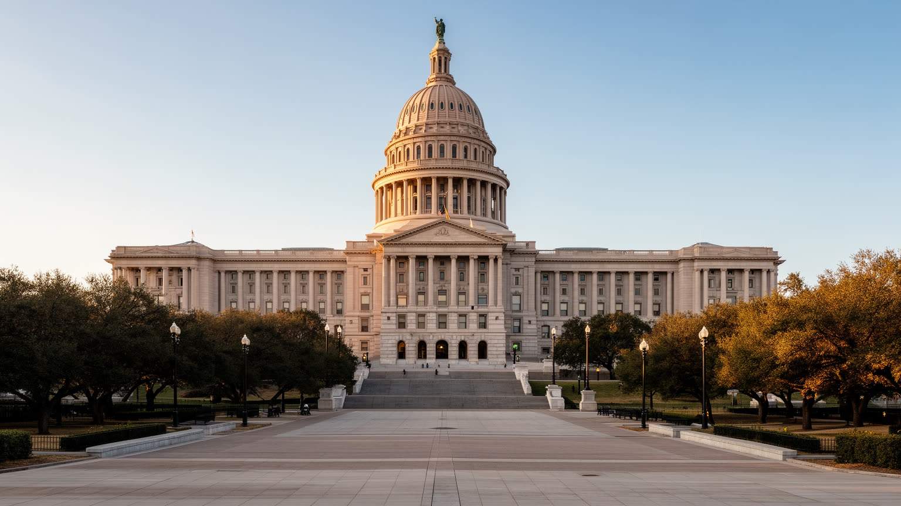
オースティンはテキサス州の首都であり、州会議事堂、知事府、行政機関、裁判所、ロビー団体、報道機関が都心に集まります。テキサスは人口、経済、エネルギー、移民、教育、銃規制、妊娠中絶、投票権をめぐる全国的な議論で大きな位置を占めるため、オースティンの政治は州内だけに閉じません。会期中には議員、弁護士、業界団体、教師、農業団体、宗教団体、学生、活動家が市内を行き来し、ホテル、食堂、会議室、広場が政策形成の舞台になります。リベラルな都市イメージと保守色の強い州政治が同じ街にあることも重要です。市政府が住宅、交通、環境、多様性を語る一方、州政府はその権限を制限することがあり、都市と州の緊張が日常の制度に現れます。州職員や関連団体の安定した雇用は、民間景気に左右されやすい技術産業を補う基盤にもなります。学校財政、電力網、水資源、警察、移民支援のような問題は、議場の判断がすぐ街の生活へ届く分野です。州会議事堂の周辺は観光地でもありますが、同時に市民が権力へ近づく場所でもあります。芝生の広場、委員会室、記者の動線が政治参加の具体的な空間になります。選挙の季節には大学や教会、地域団体も動き、政治は通勤圏の会話になります。州都としてのオースティンは、官庁街の静かな景観だけでなく、抗議、請願、警備、記者会見、法案審議が暮らしの近くで起こる政治都市です。
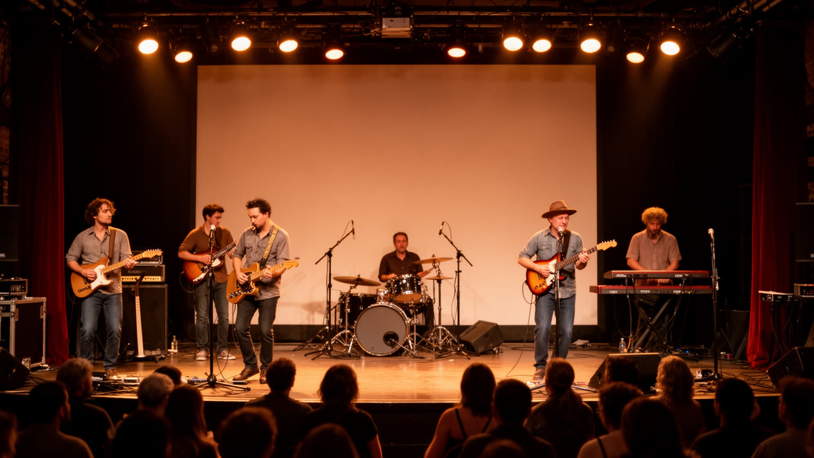
オースティンはライブ音楽の街として知られ、シックスストリート、レッドリバー、サウスコングレス、イースト側の小さな会場、野外フェスティバル、ラジオ、映画祭、大学の文化圏が都市の評判を作ってきました。音楽は観光の看板であると同時に、地元のバー、楽器店、録音、照明、音響、ポスター制作、警備、深夜の飲食を結ぶ労働市場でもあります。若い演奏者や制作スタッフは、都市の自由な雰囲気を支える一方、家賃上昇と会場閉鎖で中心部に残りにくくなっています。古いライブハウスが高級住宅やホテルに囲まれると、騒音規制、駐車、営業時間、固定資産税が文化の存続を左右します。観光客が聴く一晩の演奏の背後には、何十年も続いた地域の場と、移住者が持ち込む新しい音があります。フェスティバルが都市ブランドを強めるほど、ホテル価格、交通規制、近隣の騒音、短期労働の負担も増えます。音楽の価値を守るには、会場だけでなく、安い練習場所、住める部屋、医療、移動手段、若い作り手を支える小さな店が必要です。教会音楽、メキシコ系の祝祭、学生バンド、路上演奏も、観光用の看板とは別の音を街に残します。昼のカフェや中古楽器店も、夜の舞台を支える練習と交流の場所です。オースティンの音楽文化を読むことは、名物イベントの華やかさだけでなく、作り手が住み、練習し、働ける都市であり続けるかを見ることです。
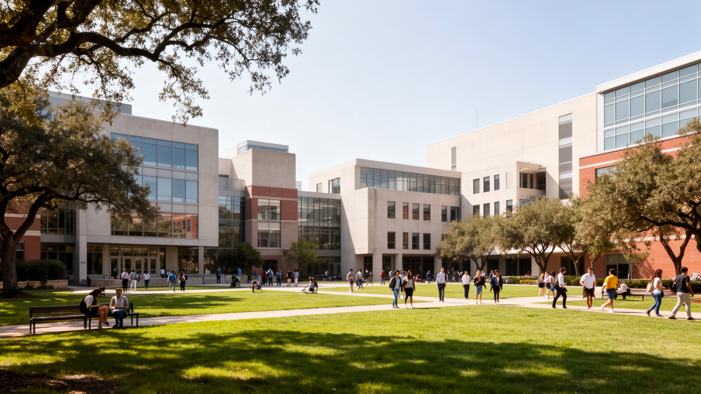
テキサス大学オースティン校は、都市の知的基盤であり、学生、研究者、医療、図書館、スポーツ、文化行事、起業を通じて街の時間を動かしています。工学、計算機科学、半導体、エネルギー、公共政策、ラテンアメリカ研究、音楽、映画などの研究は、企業集積や州政府と結び、卒業生の雇用経路を作ります。キャンパス周辺には学生住宅、書店、カフェ、バス路線、医療施設、ライブ会場が集まり、若い人口が都市の消費と政治参加を強めます。一方で大学の存在は、周辺家賃、交通、治安、建設、地域の入れ替わりにも影響します。研究資金や企業連携は都市の競争力を高めますが、大学で働く清掃、給食、警備、事務、実験補助の仕事も同じくらい重要です。大学スポーツの日には道路と飲食店が混み、卒業式や入学時期にはホテルと賃貸市場が動きます。学生は市民運動や投票にも関わり、州都の政治空間へ若い声を持ち込みます。留学生や研究者の存在は国際性を広げますが、住居、医療、言語支援も必要です。図書館や博物館、公開講座は市民にも開かれ、大学は街の学習装置として働きます。卒業生が地元企業を作る循環も、研究都市としての厚みを増します。オースティンの大学都市性は、学位やスポーツだけでなく、州政治、技術産業、市民運動、移住者の生活を接続する巨大な制度として見る必要があります。
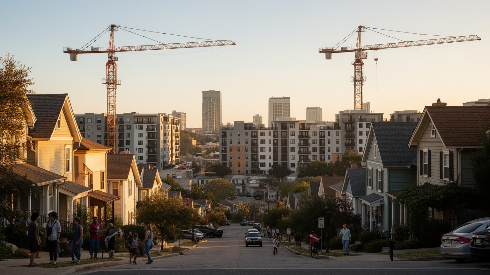
オースティンの急成長は、住宅地の地図を大きく塗り替えました。都心周辺や東側の古い地区には集合住宅、タウンハウス、短期賃貸、カフェ、オフィスが入り、長く住んできた住民や小さな店に家賃と税負担の圧力をかけています。郊外ではラウンドロック、シーダーパーク、ジョージタウン、カイル、リンダーなどへ住宅開発が広がり、広い家を求める世帯を受け入れる一方、通勤距離、道路混雑、学校区、上下水道、緑地保全の課題を増やします。技術職の流入は購買力を高めますが、サービス労働者、学生、教員、公共職員、音楽家にとっては中心部が遠くなります。住宅を増やすだけでは、歩ける店、保育、公共交通、日陰、公園、地域のつながりが伴わなければ暮らしは安定しません。固定資産税の上昇は持ち家の高齢者にも重く、賃貸の更新は若い世帯の転居を早めます。新しい高層住宅が増えても、所得の違う人が同じ地区に残れる仕組みがなければ、都市の多様性は薄くなります。ホームレス支援や低所得住宅をめぐる議論は、景観や治安の話ではなく、成長都市が住む権利をどう扱うかの問題です。学校や職場から遠い家ほど、安く見えても時間と交通費を奪います。地域の教会や学校、音楽会場が残れるかも、住まいの安定に左右されます。オースティンの住宅問題は、人気都市の副作用ではなく、成長の利益を誰が受け、誰が移動を強いられるのかを示す社会問題です。
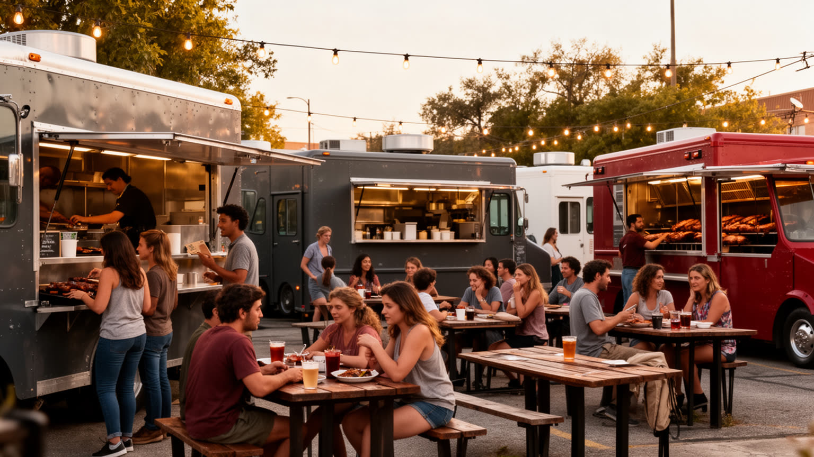
オースティンの食は、バーベキュー、タコス、朝食ブリトー、クラフトビール、コーヒー、フードトラック、移民の小さな店が重なって作られています。食文化の魅力は、名店の列だけではありません。メキシコ系住民の家庭料理、大学生の安い昼食、技術職のランチ、深夜のライブ後の食事、郊外のアジア系や中東系の店が、都市の多層性を示しています。フードトラックは固定店舗より始めやすい創業の形であり、駐車場、空き地、イベント会場、醸造所の隣に小さな経済を作ります。ただし、人気が高まるほど場所代、規制、食材費、労働時間、暑さの負担も重くなります。屋外で調理し販売する仕事は、夏の高温や急な雨にさらされ、観光客の楽しさとは別の身体的な厳しさを持ちます。人気店が観光資源になると、行列、価格、駐車、近隣の混雑も変わります。一方で、移民の店は食材、言語、送金、家族労働を支える生活拠点でもあります。厨房で働く人、肉を焼く人、トラックを整備する人、夜に片付ける人の労働も食文化の一部です。安く早く食べられる場所が減ると、学生やサービス労働者の日常も変わります。食の店は地域の会話や仕事探しの入口にもなります。屋台の配置や営業時間は、近隣との信頼にも左右されます。食をたどると、オースティンが南部、メキシコ境界文化、大学都市、技術都市、移住者の創業都市を同時に抱えることが見えてきます。
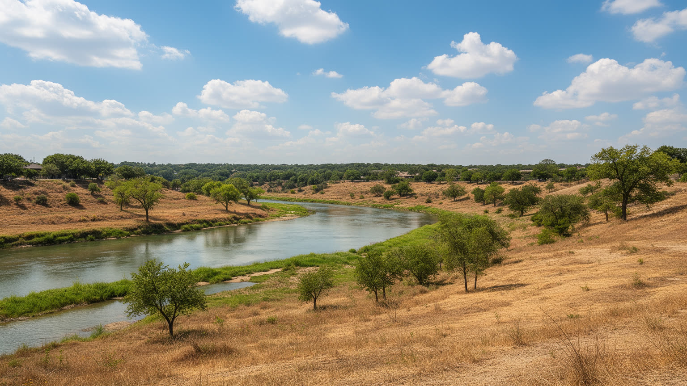
オースティンの気候は、長く暑い夏、乾いた風、強い日差し、突然の豪雨によって生活を形作ります。水辺の遊歩道や湧水プールは都市の魅力ですが、その背後には飲み水、ダム、湖の水位、芝生の散水、工場と住宅の需要、干ばつへの備えがあります。成長する都市ほど水を使い、暑さを避けるために電力も必要になります。古い住宅や断熱の弱い部屋に住む人、屋外で働く建設作業員、配達員、フードトラックの調理者、車を持たない高齢者は、同じ気温でも大きな負担を受けます。豪雨は短時間で道路や低地を危険にし、乾いた時期には山火事や水制限の不安が高まります。気候への備えは、景観の良い水辺を整えることだけではありません。日陰の歩道、冷房に頼りすぎない住宅、避難先、停電時の支援、水を多く使う産業への規律が必要です。学校の運動、野外フェス、建設現場、バス停の待ち時間も暑さに左右されます。緑地が少ない地区ほど熱はこもり、所得の低い世帯ほど冷房費の負担が重くなります。水と暑さへの対策は、環境政策であると同時に健康と労働の政策です。停電や水道障害が起きれば、在宅勤務も病院も飲食店もすぐ影響を受けます。涼める公共施設や木陰のある道は、ぜいたくではなく生活基盤です。節水の合意を作れるかは、都市の信頼にも関わります。暑さと水は、オースティンの成長がどこまで持続できるかを測る基本条件です。
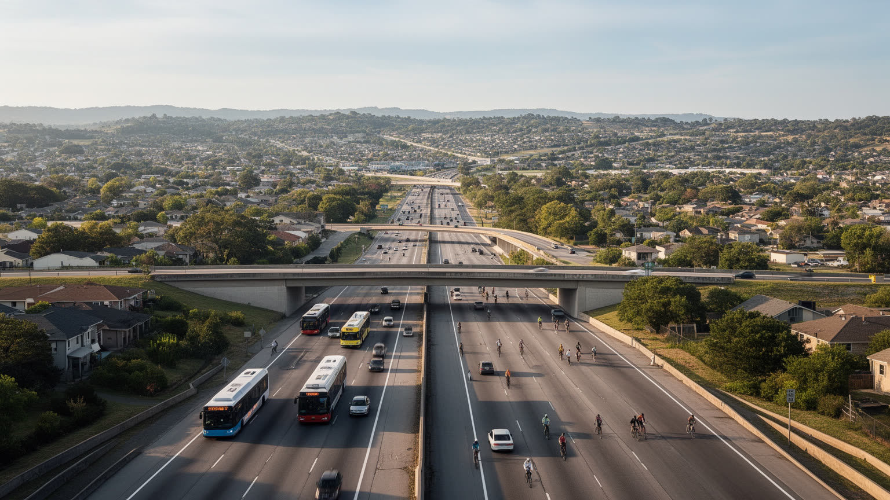
オースティンの日常移動は、I-35、モーパック、郊外道路、バス、空港、限られた鉄道計画によって形作られています。人口と雇用が急増する一方、都市は長く自動車中心に広がってきたため、通勤渋滞、駐車、交通事故、大気汚染、歩道不足が暮らしの質を左右します。技術企業のオフィス、大学、州政府、ライブ会場、病院、郊外住宅地が別々の方向へ伸びるため、働く場所と住む場所の距離は広がりがちです。公共交通を強化しようとする計画はありますが、土地利用、費用、政治的対立、既存道路の利害が複雑に絡みます。車を持てる人には選択肢が多くても、学生、低所得者、高齢者、障害者、夜勤者にとってはバスの本数や歩道の安全が仕事と学校へのアクセスを決めます。空港の拡張やイベント時の配車需要は、観光都市としての利便性を高める一方、周辺道路と住宅地へ負担をかけます。歩ける近隣を増やすには、住宅密度、日陰、横断歩道、店の配置を一緒に考える必要があります。郊外へ移った世帯は安い住まいを得ても、通勤時間、燃料費、保育の送り迎えで別の負担を負います。イベントの夜には配車、警備、清掃が増え、道路の混雑は文化産業の裏側にも現れます。交通は単なる移動の技術ではなく、住宅費、労働時間、気候負荷、都市の公平性を結ぶ問題です。オースティンの成長を読むには、渋滞を不便としてだけでなく、都市の広がり方の結果として見る必要があります。
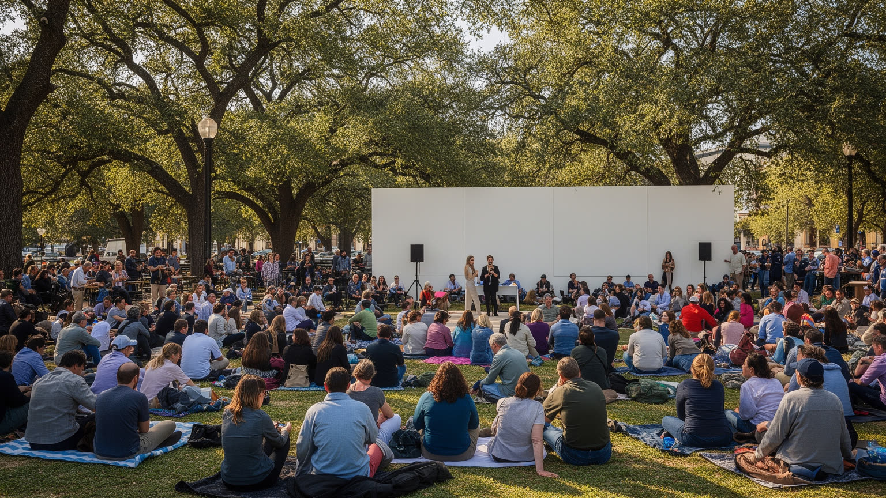
オースティンには、テキサスの中で自由で創造的で少し反骨的な都市だという自己像があります。ライブ音楽、大学、環境意識、スタートアップ、LGBTQコミュニティ、移住者の文化、市民運動は、そのイメージを支えてきました。しかし、この自己像は単純ではありません。急速な成長と高い住宅費は、かつて街の個性を作った演奏者、学生、低所得世帯、黒人やラテン系の長期住民を周辺へ押し出しやすくしています。市内の政治は多様性や環境を重視しても、州全体の政治はしばしば別の方向を向き、都市の自治をめぐる対立が起こります。古い「Keep Austin Weird」の感覚は、観光商品にもなり、同時に失われる生活文化への不安も映します。警察、ホームレス支援、学校、移民、環境規制をめぐる議論では、寛容な都市像と住民の不安がぶつかります。新しい富裕層が地域政治に加わる一方、古い近隣団体や教会、活動家も声を上げ続けています。大学の若者、州政府職員、技術企業の移住者、古い労働者地区の住民が、同じ街で違う未来像を語ります。オースティンのアイデンティティを読むには、自由な雰囲気を楽しむだけでなく、その自由を誰が使えるのか、誰が家賃や制度の壁で遠ざけられているのかを見る必要があります。都市の個性は標語ではなく、住民が残れる条件によって守られます。
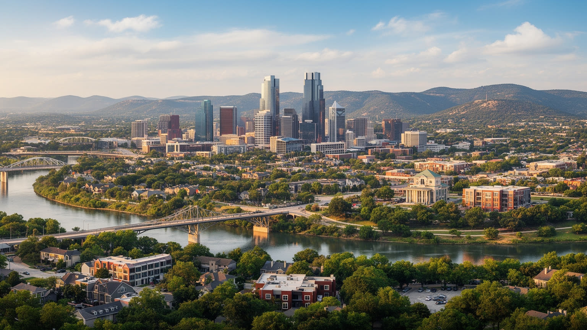
オースティンを読むとき、音楽の街、州都、技術都市、大学都市という呼び名はそれぞれ正しいものの、どれか一つでは不十分です。コロラド川と丘陵は都市の魅力と水の制約を示し、州会議事堂はテキサスの政治的対立を街路へ引き寄せ、大学と企業は研究、起業、移住を加速させます。ライブ会場、フードトラック、川辺の遊歩道は外から来る人を惹きつけますが、その背後では家賃上昇、郊外通勤、暑さ、交通、文化の場所の消失が進みます。成長は税収と雇用を増やす一方、誰が中心部に住み、誰が遠くへ移るのかを常に問い直します。オースティンの重要さは、アメリカの新しい内陸成長都市が抱える希望と矛盾を濃く映す点にあります。自由で創造的な都市像を守るには、企業誘致や観光だけでなく、手頃な住宅、水と電力への規律、公共交通、暑さへの備え、古いコミュニティの継承が欠かせません。州都であることは政治の緊張を呼び、大学都市であることは若さと研究を呼び、技術都市であることは資本と不動産圧力を呼び込みます。音楽、食、学問、州政治が近い距離で交わるからこそ、小さな変化も広く波及します。これらは別々の顔ではなく、同じ通勤圏と水系の中で互いに影響しています。その緊張を読むほど、オースティンは単なる人気移住先ではなく、成長の条件を問う都市として見えてきます。